RoboSwiffer is a robotic swiffer developed using Bluetooth communication, ultrasonic sensors and limit switches to map rooms and avoid obstacles. The project was completed for the 1A end of term design
symposium. I was the lead software developer and in charge of the majority of the testing and debugging. The robot was built with two NXT bricks, a laser cut and 3D printed frame.
We used PID feedback for consistent motor values and proper heading. The robot used sensor feedback to map the room and self generate a path.
Path generation was complicated given the platform and sensors that we had to work with. The algorithm that I ended up writing involved taking the perimeter of the room using the touch sensors, and then dividing
that into travelable segments. The code proceeded to constantly check for an unexpected touch sensor press (ie. an obstacle). The robot would then pivot its ultrasonic sensor around to map the dimensions of an obstacle and proceed to avoid it, and then return to its initially devised path.
This video showed the RoboSwiffer taking the perimeter of the room and then proceeding to follow its first path, all the while skirting the box.
Project members: Seamus Johnston, Jiwoo Jang, Richard Li.
Completed December 2015
RoBoat
A Wifi TeleOperated Motor Boat
The RoBoat is a ROS operated motorboat. The software package I designed lets you control the rotation of the prop and the motor speed with the keyboard. It also lets you visualize gyro data in
RVIZ, as well as displaying ultrasonic sensor data as a cone. The Arduino code prints the gyro data and ultrasonic data through serial for the package to read and
then display in RVIZ. This was very interesting to code as previous Arduino-to-ROS programs rely on the rosserial library. I started having issues with the
library when declaring a node on the Arduino and it used half the board's dynamic memory, which impacted the reliability of the sensor data. I did a lot of research and edited an existing
package to allow for a direct serial communication between the Arduino and ROS, allowing the node to be declared on the computer instead. This increased the reliability of the sensor data.
This alternative method reduced the Arduino Uno's dynamic memory usage by 50%. I was the sole software developer for this project.
These screenshots show the visualization of the gyro and ultrasonic data as I rotate the Arduino.
This video was taken while I used my keyboard to control the prop and motor speeds. It shows the inner working of the boat's gear and servo systems.
This video showed the boat with the full prop setup. It was taken while I manipulated motor values with the keyboard. During the video I moved the Arduino around to show
how the orientation changed in the visualizer. It also showed the ultrasonic cone as I moved that sensor closer and farther away from the wall.
Project members: Seamus Johnston, Jiwoo Jang, Richard Li.
Walker
Robotics Research Assistant
I was responsible for the ROS development of an intelligent walker for the elderly. The goal of the walker was
to be able to guide a person to a destination and avoid obstacles. The software was designed to read intent from the person's
grip on the handles and determine a goal based on where they were trying to go. The walker would then plan a path to the destination
accounting for obstacles and turn radius etc. Research and programming were focused on Kinect V2 based Vision systems, and Ackermann
drivetrain based path planning and steering algorithms. I also machined a handle, and support while additionally designing a preliminary walker model using SolidWorks.
I used SLAM to create real time maps with Kinect V2 for mapping using Gmapping and RTabMap. The maps were then processed for obstacles and used to provide visual odometry.
I worked with Neural Networks and object recognition to identify objects, as well as recognize desirable goals and set those as goals in the path planner.
I created the ROS package from scratch; it contained a URDF for Gazebo and RVIZ built from STLs exported from SolidWorks, as well as relevant control packages for wheels.
I also wrote Arduino Code to use a Bluetooth mobile app to control the simulation, as well as code to take measurements from strain sensors on the handles and relate them to motor speeds.
Co-op Winter 2016
Tigercat Industries
Software Developer
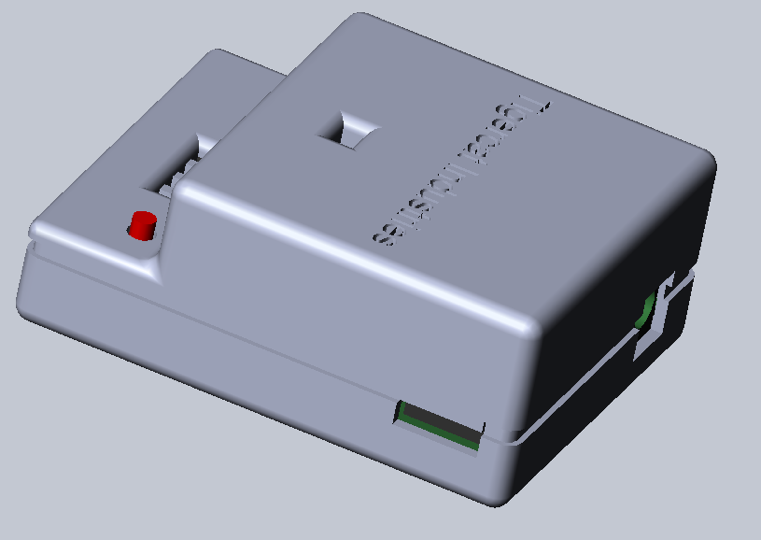
My Co-op was split between embedded work, and software development.
For the embedded half, I designed, prototyped, programmed and built a case for a power module tester.
The forestry machines we worked with are installed with a Power Management Module that controls the Telematics unit's state.
In order to ensure that this unit was not defective, I was tasked with developing a tester for it.
The tester applies different voltages to different pins on the Power Module, and reads its responses.
Based off of 4 pre-programmed test cases, the tester lights up its four BiColour LEDs differently.
The case was 3D printed and designed in SolidWorks, while the schematic and PCB design were done in KiCAD. The code was run from an Arduino Nano.
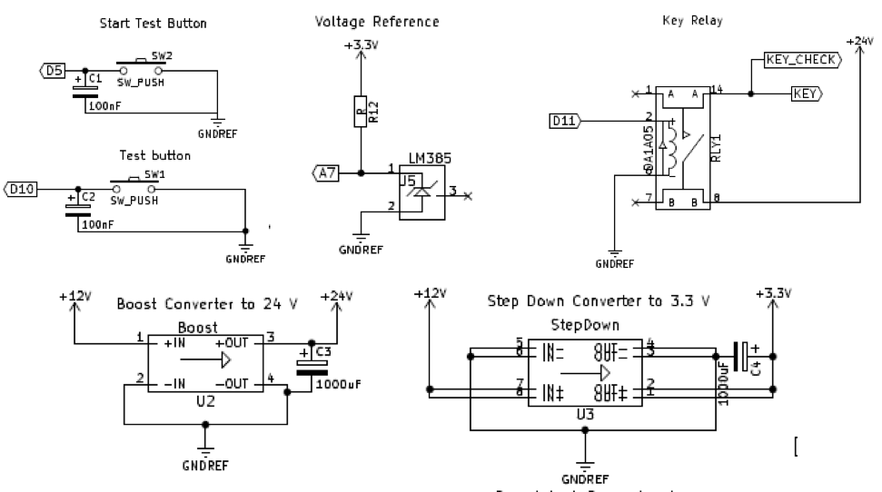
The buttons controlled the tests' start, while the Boost and Step Down converters were used to change the 12V input into 3.3V
for the Arduino and 26V for the Power Module. Consequently the relay was used to control the 26V supply.
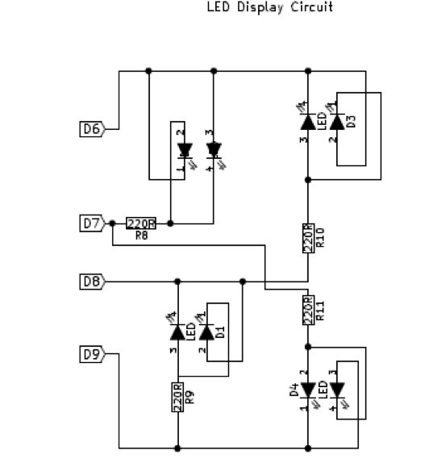
The BiColour LEDs were charlieplexed to reduce the number of used IO pins. The LEDs were then turned on and off every 2 milliseconds
(run from an interrupt), based on the value of a stored byte (corresponding to the results of the test cases).
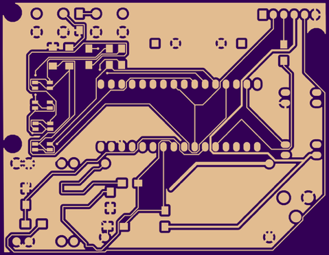
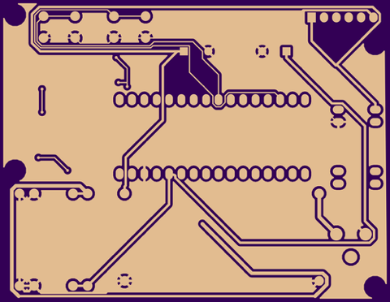
The other half of my work was on the Manufacturing Preparatory Application for the Telematics Modules. These modules were received
with default firmware on them, but needed to be loaded with custom Tigercat Firmware and machine specific information. This application was used in-house
and only by shop floor workers. I designed the application with the help of another student, to make it as user-friendly and easy for the workers. The installation
process for these devices was quite complicated and took about 30 minutes to finish once started. I designed methods for data transfer via SSH, remote/automated
interactions with the Telematics Database, decrypting encrypted files, and accessing different REST APIs.
As well as completing that application, I designed a separate, more advanced version for use in the field. Machines with outdated firmware were proving unresponsive
to remote updates, so I designed a "one-click" application that ran based on pre-loaded information. This was necessary because the company's database was unavailable abroad.
Since the outdated firmware had so many bugs, I coded the portable prep app to handle every possible thing that could go wrong, which involved writing workarounds for many specific issues.
This turned into an unbelievably effective and robust piece of software for updating firmware and repairing broken machines.
Co-op Fall 2016
UW Sailbot
Co-Founder and Controls Lead
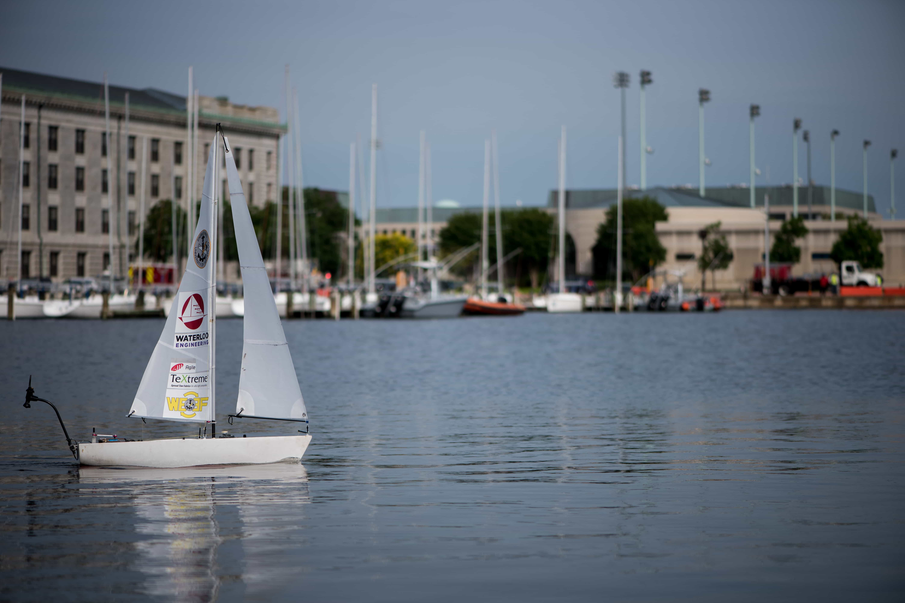
I helped found the team in May 2016 because I hated that I didn't have time to sail anymore in university due to how demanding my program is. The creation of this team helped me link
my two favourite things: sailing and robotics. The team has around 15 core members, and 30 additional students that help occasionally. Our first competition was in June 2017,
at the International Robotics Sailing Regatta. We came 2nd in Canada, 1st out of all rookie teams and 6th overall (out of 11). The above boat was our first competition vessel, named Lil Yachty.
For 2018 we designed a 2m long monohull with a 1.5m keel, as pictured below. Its control system is completely autonomous, featuring buoy recognition up to 15m away, and a fully functioning point to point navigator I wrote.
The navigator is written to optimize the boat's velocity in the direction of the target, and will thus choose an optimal path regardless of wind shifts, and wind direction. The navigator also utilizes ROS actions and services
to preform pre written maneuvers such as layline navigation and tacking. I also created a path planner that is responsible for feeding waypoints into the navigator. This design allows us to configure the path
planner for different challenges (long distance navigation, collision avoidance, station keeping), without changing the navigator. Currently the autonomous navigation challenge,the long distance challenge,
and the station keeping challenge are written, with the search challenge mostly complete. The boat came 4th overall (out of 7), and unfortunately a lot of the autonomous functionality of the boat was not able to
be tested due to a lot of electrical and mechanical issues.
With an increasingly complicated control system and lack of testing time (due to ice and cold waters), a simulator was developed to be able to test our navigation capabilities. The simulator interfaces with the ROS
topics published with winch and rudder values, and then preforms some physics calculations to determine the boats next position (pixel -> gps). This position and orientation is published, which the path planner/navigator
receiver as they would a real position. This allows us to test this code as if the boat was actually sailing. It can also simulate the box for the station
keeping challenge and well as different obstacles and routes for other challenges, and is extremely useful for stress testing of different navigation methods by changing wind speed/direction and other environmental changes.
Additionally the simulator can be used as a visualizer for live data or for saved data from real test sessions, in order to replay and capture strange behavior.
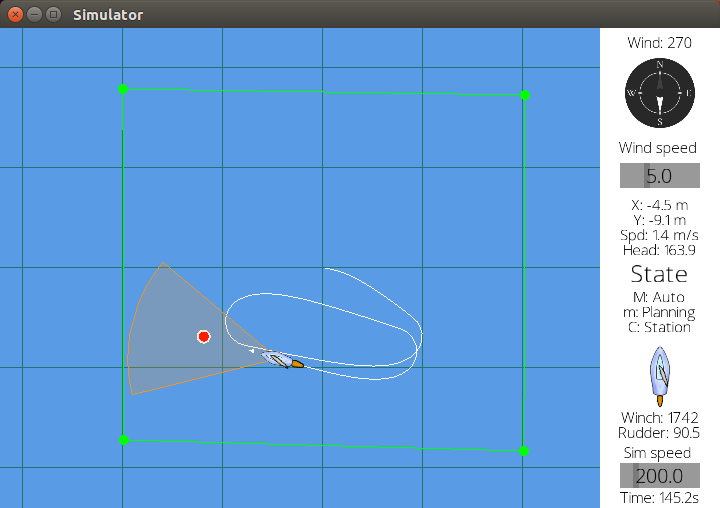
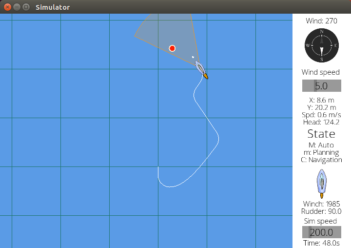
This team has allowed me to grow as a leader and understand how to delegate and manage a group of people in order to successfully raise money, recruit and compete with a fully functional boat. Designing an entire autonomous
software system from scratch has helped me learn a lot about how to make design decisions and how best to create systems that are easy to modify or build on in the future.
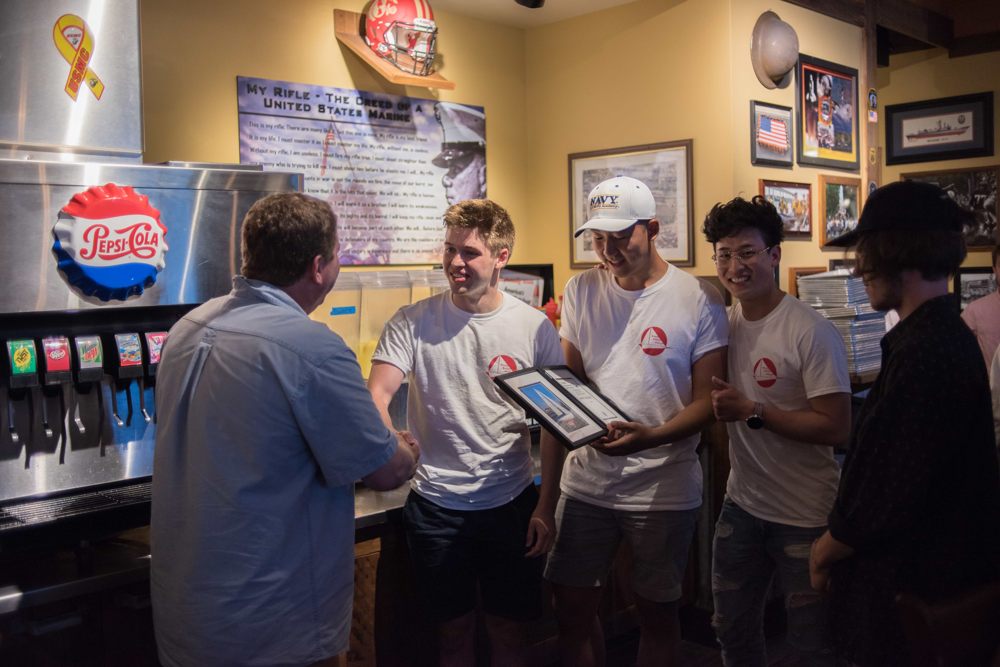
You can read an article the University of Waterloo wrote about us
here
, and watch the following video showing our 2018 competition vessel sailing through a tack.
May 2016 - September 2019
2G Robotics
Robotics Engineering Intern
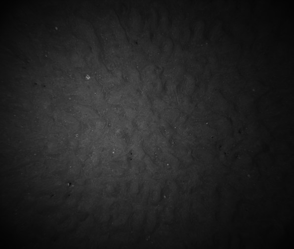
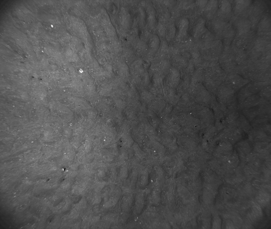
During my co-op I worked on both image rectification and light distribution correction. First: Image Leveling. As you can see above, I devised an algorithm to aid in the correction of
vignetting in underwater images taken by our underwater camera. This was done using a linear approximation of the light distribution and OpenCV. It was not extremely accurate due to this
linear approximation of the distribution. To make this algorithm more robust and useful, I decided to create a simulator to get the exact light distribution given the orientation and
position of the underwater LEDs.
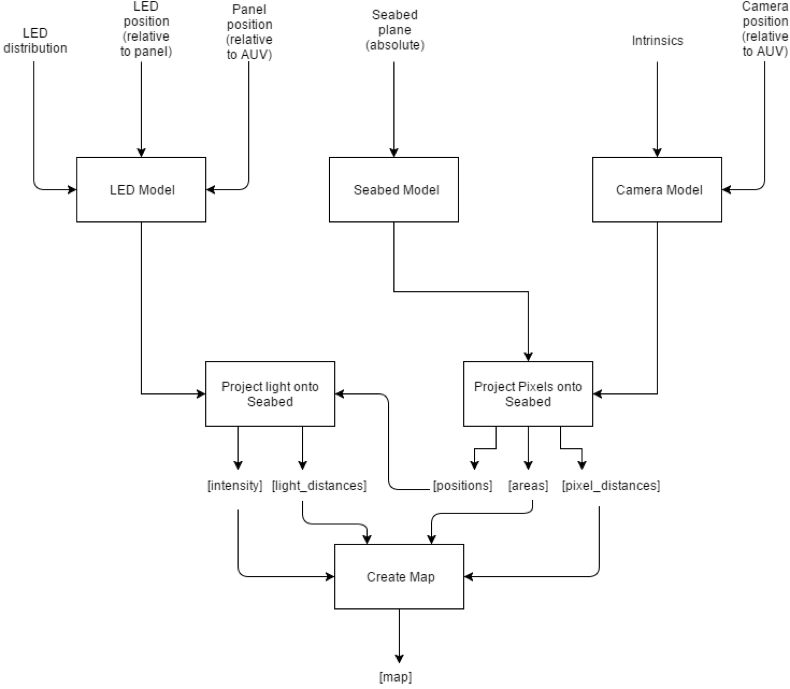
The steps for this algorithm were as follow:
1. Use camera pinhole effect to project each of the camera's pixels onto the seabed. Use this to get the position of each pixel and its distance to the camera.
2. Use ray tracing techniques to determine the intensity of a specific point on the seaplane. This will be done by drawing back a vector to the LED, calculating
that vectors angle, and using the candela distribution find its intensity. Distance of the point to the LED must also be output.
3. Using the information from Step 1 and Step 2, figure out the intensity of each pixel knowing each pixel's position on the seabed, the distance the light travels
to the plane, and the distance the pixel is from the camera. The position of the pixel will then be fed into the algorithm for Step 1, which will determine that point’s intensity.
This step will output a map of intensities per pixel.
Another simulator was also written for a panel of LEDs that had one big cylindrical viewport. This had to follow a different method because of refraction through the viewport. A MonteCarlo
simulator was designed to handle this problem, and worked by projecting billions of rays randomly (biased to the distribution of the LED intensity curve). These rays were then summed on the seafloor
and assigned to the nearest camera pixel.
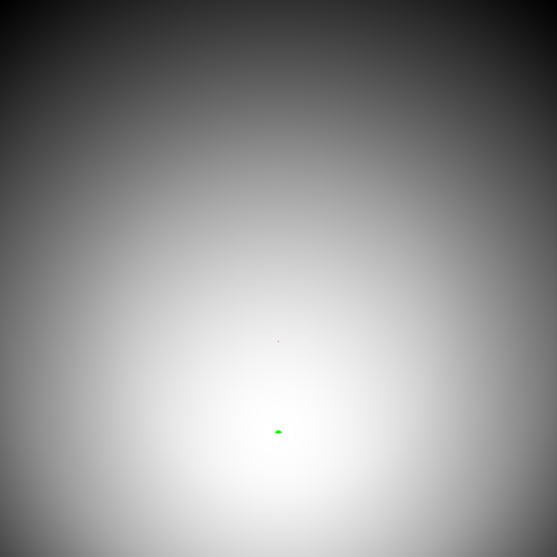
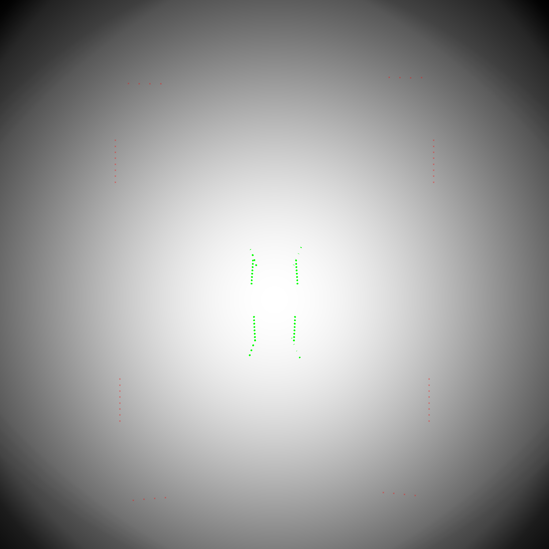
The simulator was meant generate the light distribution based on the position of 48 LEDs but the entire reason it was designed was to create a more even light distribution on the seafloor, so that
image rectification would not even be needed. This simulator let us move around the LEDs until we could find the best possible distribution. Above are the before and after results, please note that
the photos are scaled so that all the intensities are mapped between 0-255, meaning that a black pixel does not mean that no light reaches that pixel, just that it is the darkest. The metrics for the final
panel are MAX: 91.9699 MIN: 36.037 AVERAGE: 67.6048.
Co-op Spring 2017
Trexo Robotics
Robotics Software Developer
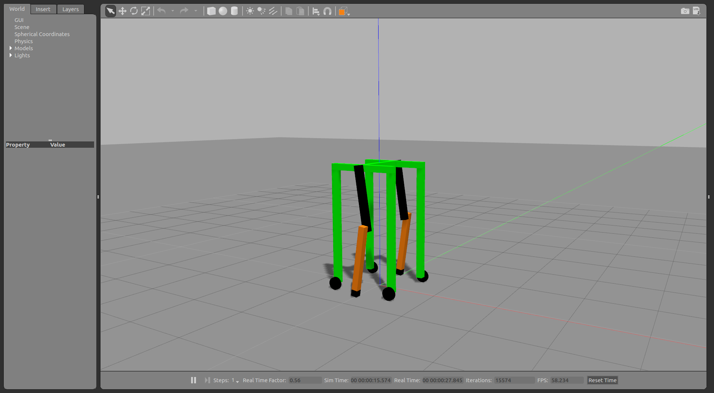
During my co-op, I wrote a ROS control loop plugin for Gazebo, using a custom URDF designed for optimal traction in simulation.
The simulator helped test gait patterns and different ROS controllers for the device. Using this simulator helped uncover issues related to lag between commanded and actuated motor velocities.
This led to the complete redesign of the ROS control loop. I rewrote the control loop to use the ROS RTT integration, in order to be realtime safe. Using a realtime Ubuntu patch, this code can run at 1000+ Hz.
My main project for my co-op term was redesigning the gait planner. The gait was adjustable to accommodate children with certain restrictions (those whose hips/knees cannot extend past x degrees),
compensated for changes in leg thigh and calf length, and was made to be speed adjustable through an android app. The new planner is able to generate continuous gait cycles, for either of the legs, or both simultaneously.
It does so by constantly generating ideal velocity and position commands for all 4 joints. This lead to a much smoother and more accurate gait cycle, and was a huge improvement over the 8 point fixed gait trajectory that was previously used.
Something that stuck with me at the end of this coop term was talking to a parent at the end of the session and asking how his son was doing at home. After the redesign of the gait he
remarked that on the way home his son (normally walking with pencil straight legs) raised his knee to take a step. This allowed me to realize the full scope of this project, as well
as the profound impact redesign of a control system and gait planner can have on a child’s life.
Co-op Winter 2018
NVIDIA - Autonomous Vehicles
Vehicle Dynamic Controls Engineering Intern
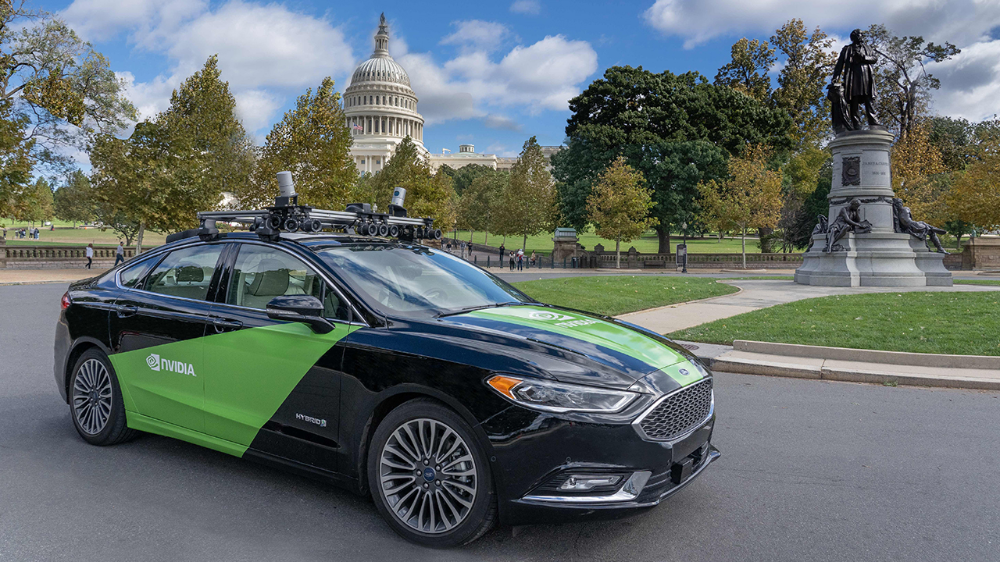
My co-op term at NVIDIA helped me to grow a lot as an aspiring controls engineer. I worked on an acceleration
filter to help the control system get measurements that had as little noise as possible. I analyzed and implemented many different methods
including low-pass filters, complementary filters, Kalman filters, and non-linear observers.
While I worked there, I also analyzed the control loops to ensure optimal performance, and designed a control loop latency monitor,
to help alert the health module if actuation commands were not being executed as expected.
Co-op Fall 2018
Kitty Hawk - Cora
Flight Controls Engineer
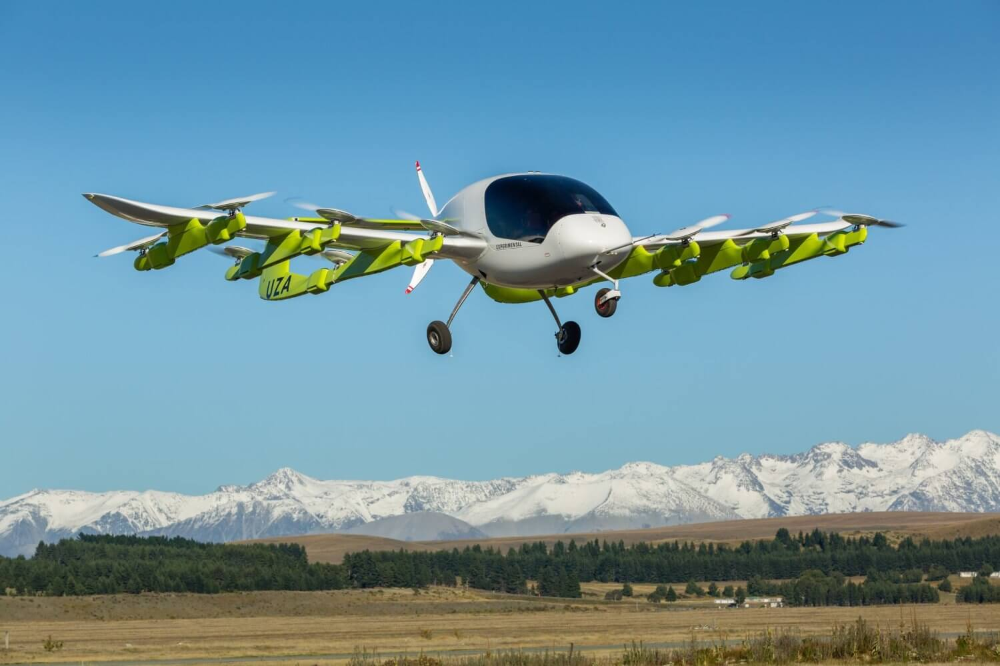
My co-op term at Kitty Hawk was one of my favourites. It gave me the experience to work on a
eVTOL aircraft, with the leaders in the industry. It exposed me to multivariable controls for 6DOF systems,
and the robust design and testing procedures required for aircraft control systems. I got to work on variety of projects during
my time there. These projects included working on the preflight checks that the plane runs, adding fan failures and edge cases
to the non-linear trim optimizer in MATLAB, working on optimizing the deceleration trajectory generation and analyzing/modelling
motor thermal characteristics.
Co-op Summer 2019
Search and Rescue Robot - MTE 380
Software Lead
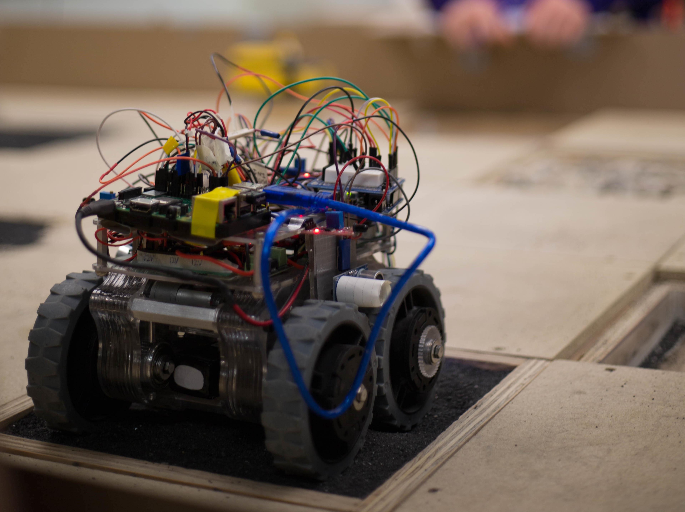
The term project for MTE 380 was the design of a search and rescue robot capable of the following functions:
extinguishing a fire, finding lego people/buildings and finding a magnet hidden under sand. In groups of 5
we had to design a robot to perform these functions while being able to traverse a 2mx2m grid. The grid was split into
multiple tiles with different terrains: sand, rocks, wood, or a valley. A valley was just a wood tile lower than the rest
so the robot had to climb back out. Our group focuses on being able to find a magnet under the sand and extinguish the fire (candle)
seeing as we only had 2 months to build and test the robot. I was responsible for all the sensor drivers, as well as the
control loops to run the motors and the localization stack to help the robot determine where it was in the course. In order
to find the candle and magnet, the course had to be scanned with an IR sensor, and then each of the sand tiles had to be visited
in sequence to determine which one had the magnet.
Most of the robots primary functions were accomplished with a driveToTile() function,
which heavily relied on the robot knowing where it was, and the corresponding localization stack. The following flowchart shows the
localization stack, mostly dependant on wheel odometry and ultrasonic measurements of the sides of the course.
The stack was relatively effective and allowed for reasonable accuracy driving from tile to tile.
The following video shows the results of the PI controller I designed for the robots heading control system. It used the outputs of the
onboard IMU to determine its heading and then actuated the motor accordingly to correct itself.
Finally, the following video shows the successful completion of two objectives on the actual demo course.
Project members: Seamus Johnston, Jiwoo Jang, Richard Li, Eric Gemnay, Bryan Matzko.


 RoboSwiffer is a robotic swiffer developed using Bluetooth communication, ultrasonic sensors and limit switches to map rooms and avoid obstacles. The project was completed for the 1A end of term design
symposium. I was the lead software developer and in charge of the majority of the testing and debugging. The robot was built with two NXT bricks, a laser cut and 3D printed frame.
We used PID feedback for consistent motor values and proper heading. The robot used sensor feedback to map the room and self generate a path.
RoboSwiffer is a robotic swiffer developed using Bluetooth communication, ultrasonic sensors and limit switches to map rooms and avoid obstacles. The project was completed for the 1A end of term design
symposium. I was the lead software developer and in charge of the majority of the testing and debugging. The robot was built with two NXT bricks, a laser cut and 3D printed frame.
We used PID feedback for consistent motor values and proper heading. The robot used sensor feedback to map the room and self generate a path.

 The RoBoat is a ROS operated motorboat. The software package I designed lets you control the rotation of the prop and the motor speed with the keyboard. It also lets you visualize gyro data in
RVIZ, as well as displaying ultrasonic sensor data as a cone. The Arduino code prints the gyro data and ultrasonic data through serial for the package to read and
then display in RVIZ. This was very interesting to code as previous Arduino-to-ROS programs rely on the rosserial library. I started having issues with the
library when declaring a node on the Arduino and it used half the board's dynamic memory, which impacted the reliability of the sensor data. I did a lot of research and edited an existing
package to allow for a direct serial communication between the Arduino and ROS, allowing the node to be declared on the computer instead. This increased the reliability of the sensor data.
This alternative method reduced the Arduino Uno's dynamic memory usage by 50%. I was the sole software developer for this project.
The RoBoat is a ROS operated motorboat. The software package I designed lets you control the rotation of the prop and the motor speed with the keyboard. It also lets you visualize gyro data in
RVIZ, as well as displaying ultrasonic sensor data as a cone. The Arduino code prints the gyro data and ultrasonic data through serial for the package to read and
then display in RVIZ. This was very interesting to code as previous Arduino-to-ROS programs rely on the rosserial library. I started having issues with the
library when declaring a node on the Arduino and it used half the board's dynamic memory, which impacted the reliability of the sensor data. I did a lot of research and edited an existing
package to allow for a direct serial communication between the Arduino and ROS, allowing the node to be declared on the computer instead. This increased the reliability of the sensor data.
This alternative method reduced the Arduino Uno's dynamic memory usage by 50%. I was the sole software developer for this project.

 This video was taken while I used my keyboard to control the prop and motor speeds. It shows the inner working of the boat's gear and servo systems.
This video was taken while I used my keyboard to control the prop and motor speeds. It shows the inner working of the boat's gear and servo systems.
 I was responsible for the ROS development of an intelligent walker for the elderly. The goal of the walker was
to be able to guide a person to a destination and avoid obstacles. The software was designed to read intent from the person's
grip on the handles and determine a goal based on where they were trying to go. The walker would then plan a path to the destination
accounting for obstacles and turn radius etc. Research and programming were focused on Kinect V2 based Vision systems, and Ackermann
drivetrain based path planning and steering algorithms. I also machined a handle, and support while additionally designing a preliminary walker model using SolidWorks.
I was responsible for the ROS development of an intelligent walker for the elderly. The goal of the walker was
to be able to guide a person to a destination and avoid obstacles. The software was designed to read intent from the person's
grip on the handles and determine a goal based on where they were trying to go. The walker would then plan a path to the destination
accounting for obstacles and turn radius etc. Research and programming were focused on Kinect V2 based Vision systems, and Ackermann
drivetrain based path planning and steering algorithms. I also machined a handle, and support while additionally designing a preliminary walker model using SolidWorks.

 I worked with Neural Networks and object recognition to identify objects, as well as recognize desirable goals and set those as goals in the path planner.
I worked with Neural Networks and object recognition to identify objects, as well as recognize desirable goals and set those as goals in the path planner.
 I created the ROS package from scratch; it contained a URDF for Gazebo and RVIZ built from STLs exported from SolidWorks, as well as relevant control packages for wheels.
I also wrote Arduino Code to use a Bluetooth mobile app to control the simulation, as well as code to take measurements from strain sensors on the handles and relate them to motor speeds.
I created the ROS package from scratch; it contained a URDF for Gazebo and RVIZ built from STLs exported from SolidWorks, as well as relevant control packages for wheels.
I also wrote Arduino Code to use a Bluetooth mobile app to control the simulation, as well as code to take measurements from strain sensors on the handles and relate them to motor speeds.

 With an increasingly complicated control system and lack of testing time (due to ice and cold waters), a simulator was developed to be able to test our navigation capabilities. The simulator interfaces with the ROS
topics published with winch and rudder values, and then preforms some physics calculations to determine the boats next position (pixel -> gps). This position and orientation is published, which the path planner/navigator
receiver as they would a real position. This allows us to test this code as if the boat was actually sailing. It can also simulate the box for the station
keeping challenge and well as different obstacles and routes for other challenges, and is extremely useful for stress testing of different navigation methods by changing wind speed/direction and other environmental changes.
Additionally the simulator can be used as a visualizer for live data or for saved data from real test sessions, in order to replay and capture strange behavior.
With an increasingly complicated control system and lack of testing time (due to ice and cold waters), a simulator was developed to be able to test our navigation capabilities. The simulator interfaces with the ROS
topics published with winch and rudder values, and then preforms some physics calculations to determine the boats next position (pixel -> gps). This position and orientation is published, which the path planner/navigator
receiver as they would a real position. This allows us to test this code as if the boat was actually sailing. It can also simulate the box for the station
keeping challenge and well as different obstacles and routes for other challenges, and is extremely useful for stress testing of different navigation methods by changing wind speed/direction and other environmental changes.
Additionally the simulator can be used as a visualizer for live data or for saved data from real test sessions, in order to replay and capture strange behavior.
 The following video shows the results of the PI controller I designed for the robots heading control system. It used the outputs of the
onboard IMU to determine its heading and then actuated the motor accordingly to correct itself.
The following video shows the results of the PI controller I designed for the robots heading control system. It used the outputs of the
onboard IMU to determine its heading and then actuated the motor accordingly to correct itself.